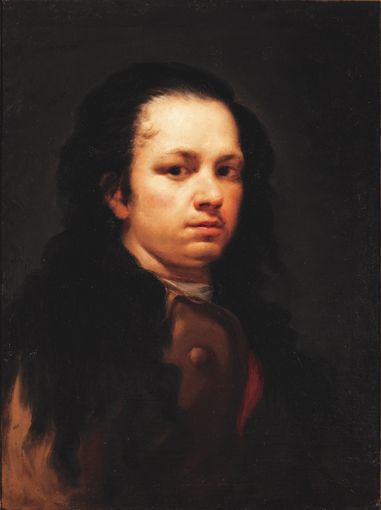

-
ARTSANCO


ARTE DE SANTANDER
Su obra, su
legado
fue un pintor y grabador español. Su obra abarca la pintura de caballete y mural, el grabado y el dibujo. Su estilo evolucionó desde el rococó, pasando por el neoclasicismo, hasta el prerromanticismo, siempre interpretados de una forma personal y original, y siempre con un rasgo subyacente de naturalismo, del reflejo de la realidad sin una visión idealista que la edulcore ni desvirtúe, donde es igualmente importante el mensaje ético. Para Goya la pintura es un vehículo de instrucción moral, no un simple objeto estético. Sus referentes más contemporáneos fueron Giambattista Tiepolo y Anton Raphael Mengs, aunque también recibió la influencia de Diego Velázquez y Rembrandt.